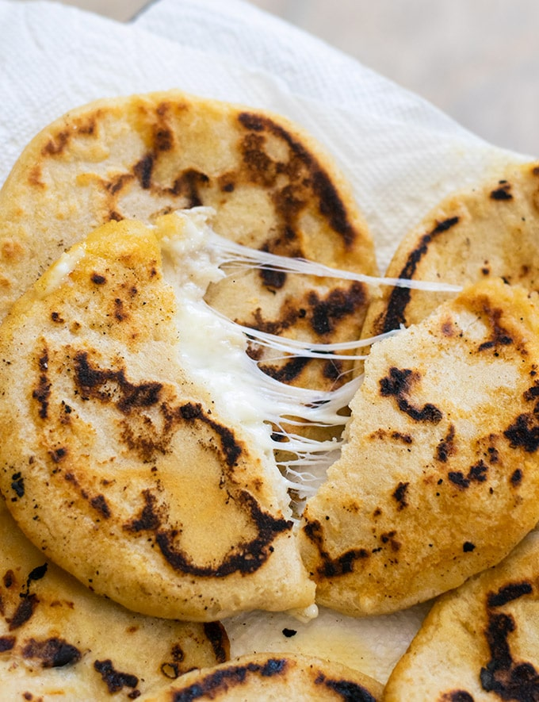

Pupusas

Description
This is the bet dish my mother in law makes. El Salvador is home to the delicous pupusa. They are a cheesy, gooey goodness. You'll be sure to ask for more.
Ingredients
- Cornmeal flour
- Pureed seasoned beans
- Roasted squash
- Oaxacan or mozzarella cheese
- Braised beef of chicken
- Curtido
- Water
Tools
- Cookie or ice cream scooper
- Medium sized bowl
- Baking sheet
- Salt
Steps
- Mix cornmeal, salt and water into a dough ball
- Scoop into 1/4 inch balls
- Press anf flatten dough into a disc.
- Fill with your choice of cheese or meat filling
- Press the edge to close
- Pan fry or bake for 20 minutes